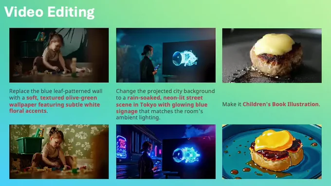
Han Lin
MURGe-Lab & UNC-NLP Group
Han Lin is a 4th-year Ph.D. student at the MURGe-Lab, UNC at Chapel Hill, advised by Prof. Mohit Bansal. His research broadly lies in computer vision, multimodal learning, and theory-grounded efficient algorithms, with a focus on controllable and interactive world modeling.
He received his M.S. in Computer Science from Columbia University, where he was a member of the DVMM Lab advised by Prof. Shih-Fu Chang and the ROAM Lab advised by Prof. Matei Ciocarlie and Prof. Shuran Song. He also holds an M.S. in Financial Engineering from Columbia University and a B.S. in Financial Engineering from Central University of Finance and Economics. He is fortunate to collaborate with Prof. Krzysztof Choromanski from Google Deepmind and has completed internships with the Movie Gen team at Meta Superintelligence Labs and the JEPA and DReaM teams at Meta FAIR.
Research
- Explicit Control via Interpretable Interfaces: developing interpretable control signals for image and video synthesis, including CTRL-Adapter, VideoDirectorGPT, AnchorWeave, EPiC, DreamRunner, and DiagrammerGPT.
- Representation Learning & Generative Priors: learning transferable visual representations, predicting future states in latent space, and strengthening generative models with multimodal priors and semantic alignment, including MetaCanvas, Bifrost-1, VEDiT, V-Co, and SMKD.
- Planning, Verification & Embodied Intelligence: using language-guided planning, verification, physics-based rewards, and active perception for video generation, 3D scene understanding, and embodied agents, including PhyMotion, EnvGen, SketchVerify, Video-MSG, DEER-3D, and Tandem3D.
- Efficient & Theory-Grounded ML: developing scalable Transformers, kernel methods, random features, and graph algorithms, including HRF, OMC, GKAT, FTFIs, and Graph Field Integrators.
Feel free to reach out to me if you would like to chat about any research ideas!
News
- PhyMotion released on arXiv
- V-Co released on arXiv
- AnchorWeave released on arXiv
- We are organizing the Any-To-Any Multimodal Learning Workshop at CVPR 2026
- Humanity's Last Exam published in Nature
- MetaCanvas released on arXiv
- SketchVerify released on arXiv
- Deer3D released on arXiv
- Bifrost-1 accepted to NeurIPS 2025
- Started research scientist internship with the Media Generation Team at Meta Superintelligence Labs
- Video-MSG released on arXiv
- DreamRunner accepted to AAAI 2025
- FTFIs accepted to NeurIPS 2024
- Started research scientist internship with the JEPA team at Meta FAIR Lab
Publications
* Equal contribution. Selected papers are highlighted. See also Google Scholar.
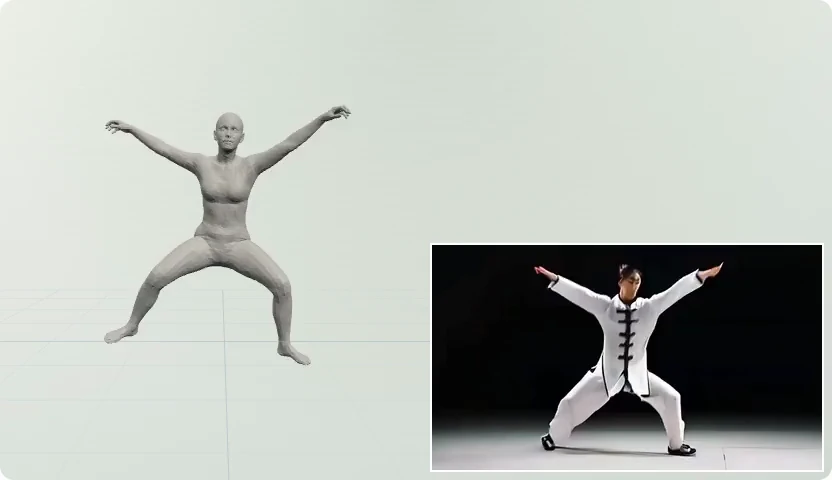
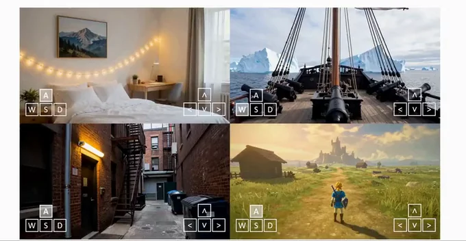
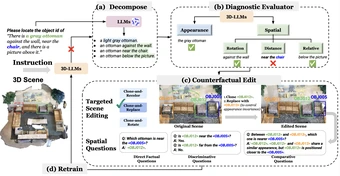
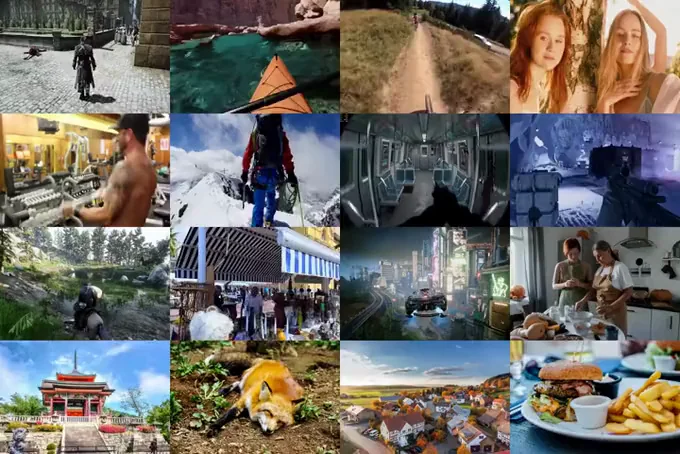
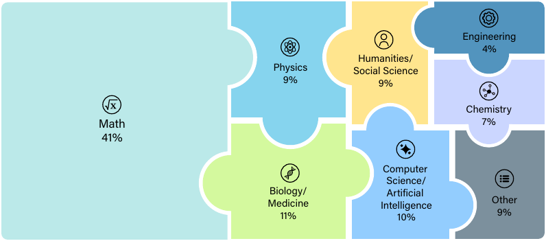

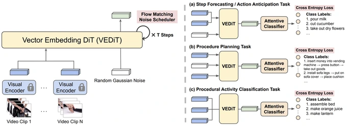
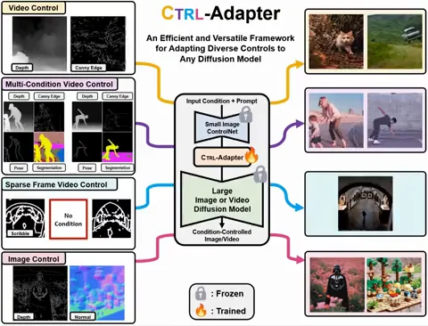
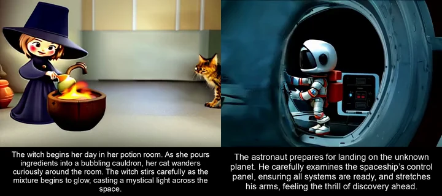
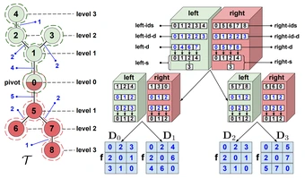
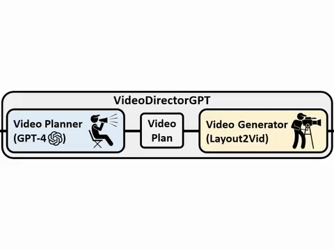
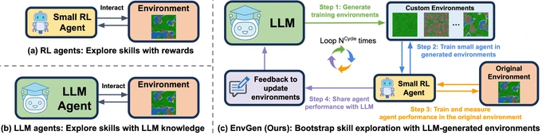
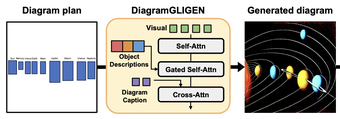
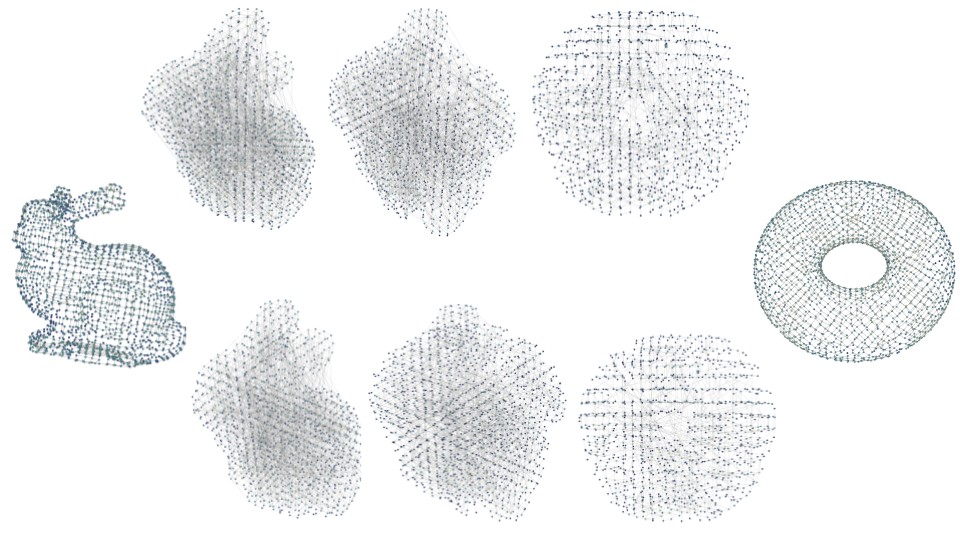
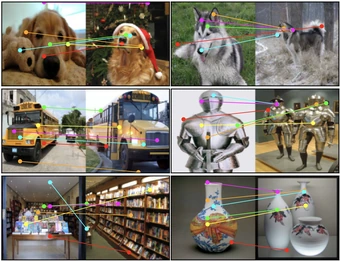
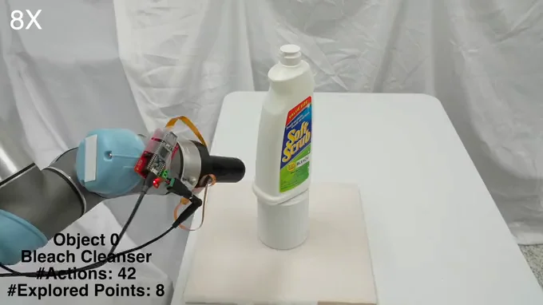
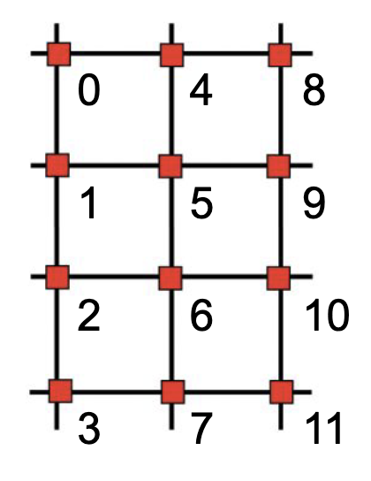
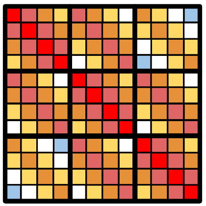

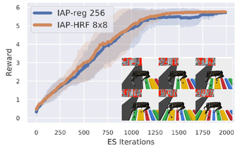
Monte Carlo
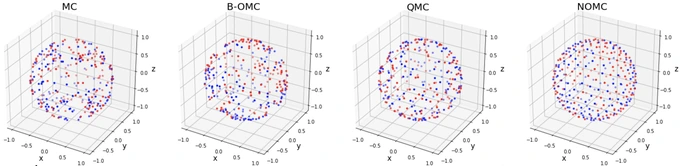
Orthogonal
Monte Carlo
Monte Carlo
Preprints
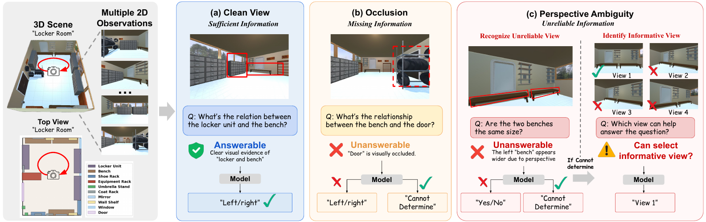
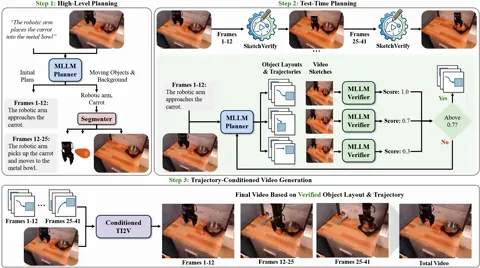
Planning with Sketch-Guided Verification for Physics-Aware Video Generation
arXiv Preprint, 2025
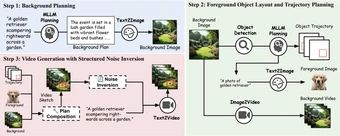
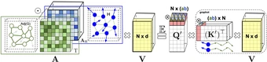
Education
University of North Carolina at Chapel Hill
Aug 2023 - Exp. May 2028
Ph.D. in Computer Science
- MURGe-Lab, advised by Prof. Mohit Bansal
Columbia University
2018 - 2020, 2021 - 2023
M.S. in Computer Science and M.S. in Financial Engineering
- DVMM Lab, advised by Prof. Shih-Fu Chang
Supervised Masked Knowledge Distillation for Few-Shot Transformers, CVPR 2023 - ROAM Lab, advised by Prof. Matei Ciocarlie and Prof. Shuran Song
Active Tactile Exploration for 3D Object Recognition, ICRA 2023
Central University of Finance and Economics
2014 - 2018
B.S. in Financial Engineering (Honor Class)
Experience
Meta
May 2026 - Dec 2026, Research Scientist Intern, DReaM Team, FAIR Lab
- Ongoing Projects: Self-improvement and on-policy distillation for video generation
May 2025 - Dec 2025, Research Scientist Intern, Movie Gen Team, MSL
May 2024 - Dec 2024, Research Scientist Intern, JEPA Team, FAIR Lab
Google DeepMind
2019 - 2024, Research Collaboration with Prof. Krzysztof Choromanski
- Fast Tree-Field Integrators, NeurIPS 2024
- Efficient Graph Field Integrators Meet Point Clouds, ICML 2023
- From Block-Toeplitz Matrices to Differential Equations on Graphs, ICML 2022
- Hybrid Random Features, ICLR 2022
- Demystifying Orthogonal Monte Carlo and Beyond, NeurIPS 2020
Professional Service
- Reviewer. NeurIPS 2022-2026, ICML 2022-2026, ICLR 2024-2025, CVPR 2025-2026, ICCV 2025, ECCV 2026, WACV 2026
- Workshop Organizer. CVPR Workshop On Any-to-Any Multimodal Learning, 2026
- Conference Volunteer. Robotics: Science and Systems (RSS), 2022
Teaching Assistant
- COMS 4231 Analysis of Algorithms, Columbia University, 2022 Fall
- COMS 4732 Computer Vision 2: Learning, Columbia University, 2022 Spring
- COMS 4721 Machine Learning for Data Science, Columbia University, 2022 Spring
- QMSS 5073 Machine Learning for Social Science, Columbia University, 2021 Fall
- IEOR 4007 Optimization Models & Methods for FE, Columbia University, 2019 Fall
- IEOR 4418 Transportation Analytics & Logistics, Columbia University, 2019 Spring